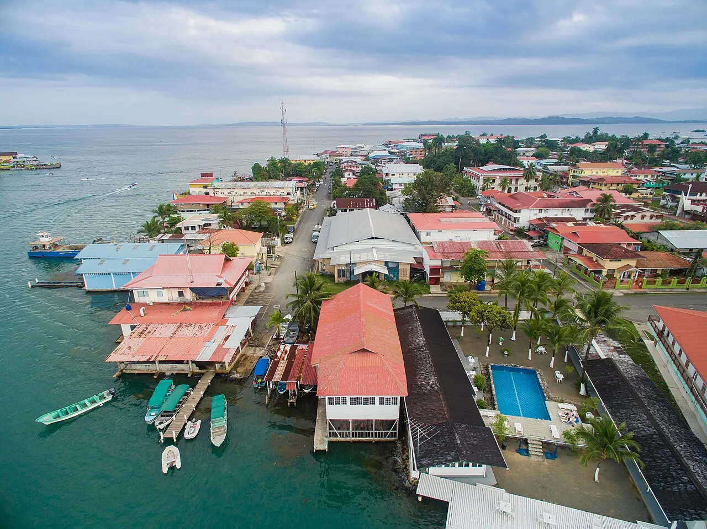

Bocas del Toro
Panama · surf, snorkeling, kayak

Archipel caribéen aux cabanes sur pilotis, avec des vagues de récif et des mangroves. Une ambiance détendue et sauvage.
- Lieu
- Panama
- Niveau
- Intermédiaire
- Activités
- surf, snorkeling, kayak
- Type d'eau
- Mer / océan
- Coordonnées
- 9.35, -82.25 (position approximative du secteur)
Dangers à connaître
- Récifs peu profonds.
- Pluies fréquentes.
Le conseil d'Ocean Buddy
Les meilleures vagues arrivent de décembre à mars.
Ouvrir dans Ocean Buddy Télécharger sur l'App Store
Source : Fiche Ocean Buddy · septembre 2026 · à vérifier localement.